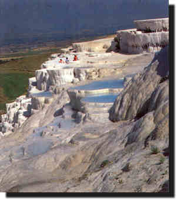

 |
Kentin hangi eski coðrafi bölgede yer aldýðý tartýþýlýr. Hierapolis, coðrafi konumu ile kendisini çevreleyen çeþitli tarihi bölgeler arasýnda yer almaktadýr. Aziz Paulos, kentin Frigya yakýnýnda, güneybatýda ve Karia sýnýrýna yakýn olduðundan bahseder, ayrýca Colossae kentinin de kuzeybatýsýnda olduðunu söyler. Strabon ile Ptolemaeus ise verdikleri |
|
bilgilerde, Karia bölgesine sýnýr olan
Laodikeia ve Tripolis kentlerine yakýnlýðý ile Hierapolis'in de Frigya kenti
olduðunu ileri sürerler.
Bizanslý Stephanus ise kentin Lidya ile Frigya
bölgeleri arasýnda zengin sýcak su kaynaklarý ile tanýndýðýndan söze eder.
Antik kaynaklarda, kentin Hellenistik dönem öncesi adý ile ilgili bir bilgi
bulunmamaktadýr. Hierapolis olarak adlandýrýlmadan önce kentte bir yaþamýn
var olduðunu Magna Mater (Ana Tanrýça) kültünden dolayý biliyoruz. Kentin kuruluþu hakkýndaki bilgilerimizin kýsýtlý olmasýna karþýn; Bergama Krallarý'ndan II.Eumenes tarafýndan MÖ II. yüzyýlda kurulduðu ve Bergama'nýn efsanevi kurucusu Telephos'un karýsý Hiera'dan dolayý Hierapolis adýný aldýðý bilinmektedir. Hierapolis, Roma Ýmparatoru Tiberius dönemindeki (MS 17) büyük depreme deðin, Hellenistik kentleþme ilkelerine baðlý kalarak özgün dokusunu sürdürmüþtür. Deprem kuþaðý üzerinde bulunan kent, Tiberius dönemi depreminden büyük zarar görmüþ ve yenilenmiþtir. Üstüste yaþadýðý depremlerden sonra kent, tüm Hellenistik niteliðini kaybetmiþ, tipik bir Roma kenti görünümünü almýþtýr. Hierapolis Roma döneminden sonra Bizans döneminde de çok önemli bir merkez olmuþtur. MS IV. yüzyýldan itibaren Hristiyanlýk merkezi olmasý, MS 80 yýllarýnda Hz. Ýsa'nýn havarilerinden olan Aziz Philip'in burada öldürülmesi nedeniyledir. Hierapolis XII. yüzyýl sonlarýna doðru Türkler'in eline geçer. Daha sonra tekrar Bizanslýlar tarafýndan geri alýnýr. XIII. yüzyýldan sonra kentin iskan gördüðüne iliþkin herhangi bir bilgi yoktur. Baþlýca Kalýntýlar Ana Cadde ve Kapýlar: Surlar: Büyük Hamam Kompleksi: |